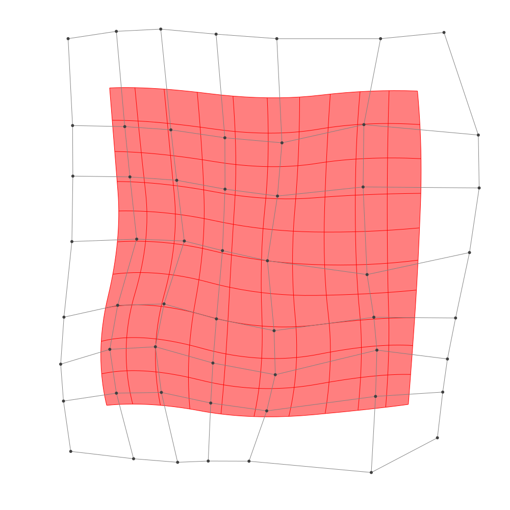
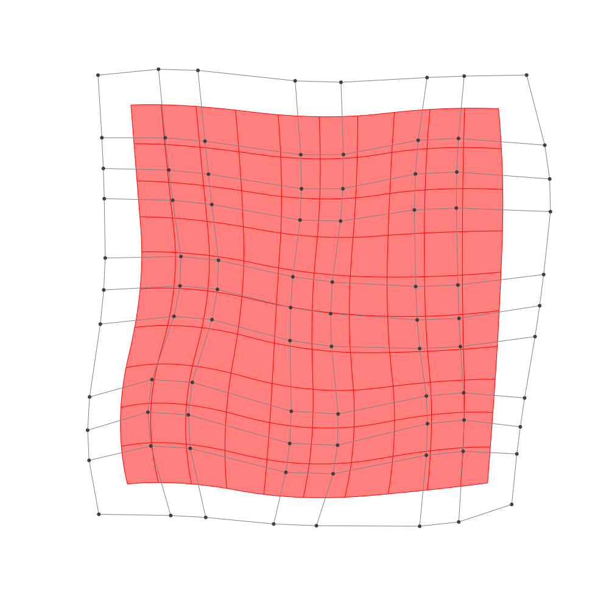

Refinement
BasicBSpline.refinement — FunctionRefinement of B-spline manifold with given B-spline spaces.
julia> p = 2 # degree of polynomial2julia> k = KnotVector(1:8) # knot vectorKnotVector([1.0, 2.0, 3.0, 4.0, 5.0, 6.0, 7.0, 8.0])julia> P = BSplineSpace{p}(k) # B-spline spaceBSplineSpace{2, Float64}(KnotVector([1.0, 2.0, 3.0, 4.0, 5.0, 6.0, 7.0, 8.0]))julia> rand_a = [SVector(rand(), rand()) for i in 1:dim(P), j in 1:dim(P)]5×5 Matrix{StaticArrays.SVector{2, Float64}}: [0.88697, 0.649204] [0.650048, 0.293472] … [0.835369, 0.742245] [0.782708, 0.42721] [0.0471103, 0.839995] [0.290306, 0.962552] [0.11597, 0.481842] [0.743734, 0.0322117] [0.701562, 0.741928] [0.780119, 0.235358] [0.918961, 0.722301] [0.962026, 0.741508] [0.0763675, 0.915829] [0.251023, 0.409516] [0.205519, 0.863536]julia> a = [SVector(2*i-6.5, 2*j-6.5) for i in 1:dim(P), j in 1:dim(P)] + rand_a # random5×5 Matrix{StaticArrays.SVector{2, Float64}}: [-3.61303, -3.8508] [-3.84995, -2.20653] … [-3.66463, 4.24224] [-1.71729, -4.07279] [-2.45289, -1.66001] [-2.20969, 4.46255] [-0.38403, -4.01816] [0.243734, -2.46779] [0.201562, 4.24193] [2.28012, -4.26464] [2.41896, -1.7777] [2.46203, 4.24151] [3.57637, -3.58417] [3.75102, -2.09048] [3.70552, 4.36354]julia> M = BSplineManifold(a,(P,P)) # Define B-spline manifoldBSplineManifold{2, (2, 2), StaticArrays.SVector{2, Float64}, Tuple{BSplineSpace{2, Float64}, BSplineSpace{2, Float64}}}((BSplineSpace{2, Float64}(KnotVector([1.0, 2.0, 3.0, 4.0, 5.0, 6.0, 7.0, 8.0])), BSplineSpace{2, Float64}(KnotVector([1.0, 2.0, 3.0, 4.0, 5.0, 6.0, 7.0, 8.0]))), StaticArrays.SVector{2, Float64}[[-3.6130302917367425, -3.850795930220536] [-3.8499520301092343, -2.206527734029402] … [-3.561447355453694, 2.237877819643687] [-3.66463113196632, 4.242244658576612]; [-1.717291887698853, -4.072790069664437] [-2.4528896607710933, -1.660005347740639] … [-1.9661719628008865, 2.161176228919702] [-2.209693837849341, 4.462551506330153]; … ; [2.2801188224707754, -4.264641803504585] [2.4189611732058953, -1.7776989532880993] … [2.0772185040549758, 2.2594591852296744] [2.462026185425941, 4.241508156166447]; [3.5763674515301966, -3.584170504161828] [3.7510225007618714, -2.0904841637682416] … [4.4976867387074835, 1.9973468822295994] [3.7055185384244314, 4.363536054693602]])
h-refinemnet
Insert additional knots to knot vector.
julia> k₊=(KnotVector(3.3,4.2),KnotVector(3.8,3.2,5.3)) # additional knotvectors(KnotVector([3.3, 4.2]), KnotVector([3.2, 3.8, 5.3]))julia> M_h = refinement(M,k₊=k₊) # refinement of B-spline manifoldBSplineManifold{2, (2, 2), StaticArrays.SVector{2, Float64}, Tuple{BSplineSpace{2, Float64}, BSplineSpace{2, Float64}}}((BSplineSpace{2, Float64}(KnotVector([1.0, 2.0, 3.0, 3.3, 4.0, 4.2, 5.0, 6.0, 7.0, 8.0])), BSplineSpace{2, Float64}(KnotVector([1.0, 2.0, 3.0, 3.2, 3.8, 4.0, 5.0, 5.3, 6.0, 7.0, 8.0]))), StaticArrays.SVector{2, Float64}[[-3.6130302917367425, -3.850795930220536] [-3.7551833347602375, -2.8642350125058558] … [-3.576924921930588, 2.5385328454836253] [-3.66463113196632, 4.242244658576612]; [-2.3808003291121143, -3.9950921208590717] [-2.717437025668511, -2.708809758108652] … [-2.5536788813135067, 2.5176351342645944] [-2.718921890790284, 4.385444109616413]; … ; [2.2801188224707754, -4.264641803504585] [2.3634242329118473, -2.772476093374693] … [2.1349396562606207, 2.55676653087019] [2.462026185425941, 4.241508156166447]; [3.5763674515301966, -3.584170504161828] [3.6811604810692016, -2.6879586999256757] … [4.378861508665026, 2.3522752580991995] [3.7055185384244314, 4.363536054693602]])julia> save_png("2dim_h-refinement.png", M_h) # save image

Note that this shape and the last shape are identical.
p-refinemnet
Increase the polynomial degree of B-spline manifold.
julia> p₊=(1,2) # additional degrees(1, 2)julia> M_p = refinement(M,p₊=p₊) # refinement of B-spline manifoldBSplineManifold{2, (3, 4), StaticArrays.SVector{2, Float64}, Tuple{BSplineSpace{3, Float64}, BSplineSpace{4, Float64}}}((BSplineSpace{3, Float64}(KnotVector([1.0, 2.0, 3.0, 3.0, 4.0, 4.0, 5.0, 5.0, 6.0, 6.0, 7.0, 8.0])), BSplineSpace{4, Float64}(KnotVector([1.0, 2.0, 3.0, 3.0, 3.0, 4.0, 4.0, 4.0, 5.0, 5.0, 5.0, 6.0, 6.0, 6.0, 7.0, 8.0]))), StaticArrays.SVector{2, Float64}[[-3.377082493769375, -3.444706382507876] [-3.5370996991805983, -2.5585292406012528] … [-3.3272114882453754, 2.7385612825261516] [-3.390498218046341, 3.7654954051990743]; [-2.1963695635274063, -3.4646163878483653] [-2.522612113838546, -2.322267070697521] … [-2.2870842428994753, 2.7369282951230822] [-2.39715033887905, 3.862865230621847]; … ; [2.532363044101817, -3.570879895635959] [2.6047686110107544, -2.41017984634629] … [2.5277911351042177, 2.7272918858608235] [2.622113652318532, 3.7503280547898123]; [3.402497579890857, -3.2827751143779387] [3.4868407129653125, -2.4531605683625686] … [3.9452739779302197, 2.6165737174486448] [3.647271201259862, 3.7676566202200443]])julia> save_png("2dim_p-refinement.png", M_p) # save image

Note that this shape and the last shape are identical.